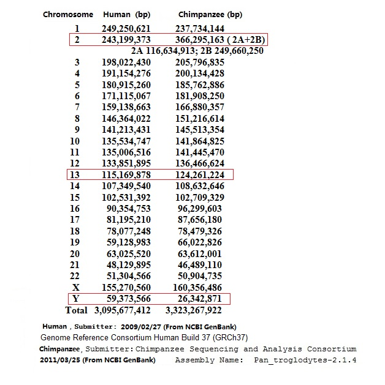

<html xmlns:v="urn:schemas-microsoft-com:vml"
xmlns:o="urn:schemas-microsoft-com:office:office"
xmlns:w="urn:schemas-microsoft-com:office:word"
xmlns="http://www.w3.org/TR/REC-html40">

<head>
<meta http-equiv=Content-Type content="text/html; charset=gb2312">
<meta name=ProgId content=Word.Document>
<meta name=Generator content="Microsoft Word 11">
<meta name=Originator content="Microsoft Word 11">
<link rel=File-List href="CHT7-P2_files/filelist.xml">
<link rel=Edit-Time-Data href="CHT7-P2_files/editdata.mso">
<!--[if !mso]>
<style>
v\:* {behavior:url(#default#VML);}
o\:* {behavior:url(#default#VML);}
w\:* {behavior:url(#default#VML);}
.shape {behavior:url(#default#VML);}
</style>
<![endif]-->
<title>染色体数目的差异是猿进化成人的鸿沟</title>
<!--[if gte mso 9]><xml>
 <o:DocumentProperties>
  <o:Author>Victor</o:Author>
  <o:Template>Normal</o:Template>
  <o:LastAuthor>Samuel</o:LastAuthor>
  <o:Revision>19</o:Revision>
  <o:TotalTime>215</o:TotalTime>
  <o:Created>2014-04-07T21:38:00Z</o:Created>
  <o:LastSaved>2014-05-09T17:39:00Z</o:LastSaved>
  <o:Pages>2</o:Pages>
  <o:Words>571</o:Words>
  <o:Characters>3256</o:Characters>
  <o:Lines>27</o:Lines>
  <o:Paragraphs>7</o:Paragraphs>
  <o:CharactersWithSpaces>3820</o:CharactersWithSpaces>
  <o:Version>11.9999</o:Version>
 </o:DocumentProperties>
</xml><![endif]--><!--[if gte mso 9]><xml>
 <w:WordDocument>
  <w:Zoom>106</w:Zoom>
  <w:SpellingState>Clean</w:SpellingState>
  <w:GrammarState>Clean</w:GrammarState>
  <w:ValidateAgainstSchemas/>
  <w:SaveIfXMLInvalid>false</w:SaveIfXMLInvalid>
  <w:IgnoreMixedContent>false</w:IgnoreMixedContent>
  <w:AlwaysShowPlaceholderText>false</w:AlwaysShowPlaceholderText>
  <w:Compatibility>
   <w:UseFELayout/>
  </w:Compatibility>
  <w:BrowserLevel>MicrosoftInternetExplorer4</w:BrowserLevel>
 </w:WordDocument>
</xml><![endif]--><!--[if gte mso 9]><xml>
 <w:LatentStyles DefLockedState="false" LatentStyleCount="156">
 </w:LatentStyles>
</xml><![endif]-->
<style>
<!--
 /* Font Definitions */
 @font-face
	{font-family:SimSun;
	panose-1:2 1 6 0 3 1 1 1 1 1;
	mso-font-alt:SimSun;
	mso-font-charset:134;
	mso-generic-font-family:auto;
	mso-font-pitch:variable;
	mso-font-signature:3 680460288 22 0 262145 0;}
@font-face
	{font-family:Calibri;
	panose-1:2 15 5 2 2 2 4 3 2 4;
	mso-font-charset:0;
	mso-generic-font-family:swiss;
	mso-font-pitch:variable;
	mso-font-signature:-1610611985 1073750139 0 0 159 0;}
@font-face
	{font-family:"\@SimSun";
	panose-1:2 1 6 0 3 1 1 1 1 1;
	mso-font-charset:134;
	mso-generic-font-family:auto;
	mso-font-pitch:variable;
	mso-font-signature:3 680460288 22 0 262145 0;}
 /* Style Definitions */
 p.MsoNormal, li.MsoNormal, div.MsoNormal
	{mso-style-parent:"";
	margin:0in;
	margin-bottom:.0001pt;
	mso-pagination:widow-orphan;
	font-size:12.0pt;
	font-family:SimSun;
	mso-bidi-font-family:SimSun;}
a:link, span.MsoHyperlink
	{color:blue;
	text-decoration:underline;
	text-underline:single;}
a:visited, span.MsoHyperlinkFollowed
	{color:blue;
	text-decoration:underline;
	text-underline:single;}
p
	{mso-margin-top-alt:auto;
	margin-right:0in;
	mso-margin-bottom-alt:auto;
	margin-left:0in;
	mso-pagination:widow-orphan;
	font-size:12.0pt;
	font-family:SimSun;
	mso-bidi-font-family:SimSun;}
pre
	{mso-style-noshow:yes;
	mso-style-link:" Char Char";
	margin:0in;
	margin-bottom:.0001pt;
	mso-pagination:widow-orphan;
	tab-stops:45.8pt 91.6pt 137.4pt 183.2pt 229.0pt 274.8pt 320.6pt 366.4pt 412.2pt 458.0pt 503.8pt 549.6pt 595.4pt 641.2pt 687.0pt 732.8pt;
	font-size:10.0pt;
	font-family:"Courier New";
	mso-fareast-font-family:"Times New Roman";}
p.ListParagraph, li.ListParagraph, div.ListParagraph
	{mso-style-name:"List Paragraph";
	margin-top:0in;
	margin-right:0in;
	margin-bottom:10.0pt;
	margin-left:.5in;
	mso-add-space:auto;
	line-height:115%;
	mso-pagination:widow-orphan;
	font-size:11.0pt;
	font-family:Calibri;
	mso-fareast-font-family:SimSun;
	mso-bidi-font-family:"Times New Roman";}
p.ListParagraphCxSpFirst, li.ListParagraphCxSpFirst, div.ListParagraphCxSpFirst
	{mso-style-name:"List ParagraphCxSpFirst";
	mso-style-type:export-only;
	margin-top:0in;
	margin-right:0in;
	margin-bottom:0in;
	margin-left:.5in;
	margin-bottom:.0001pt;
	mso-add-space:auto;
	line-height:115%;
	mso-pagination:widow-orphan;
	font-size:11.0pt;
	font-family:Calibri;
	mso-fareast-font-family:SimSun;
	mso-bidi-font-family:"Times New Roman";}
p.ListParagraphCxSpMiddle, li.ListParagraphCxSpMiddle, div.ListParagraphCxSpMiddle
	{mso-style-name:"List ParagraphCxSpMiddle";
	mso-style-type:export-only;
	margin-top:0in;
	margin-right:0in;
	margin-bottom:0in;
	margin-left:.5in;
	margin-bottom:.0001pt;
	mso-add-space:auto;
	line-height:115%;
	mso-pagination:widow-orphan;
	font-size:11.0pt;
	font-family:Calibri;
	mso-fareast-font-family:SimSun;
	mso-bidi-font-family:"Times New Roman";}
p.ListParagraphCxSpLast, li.ListParagraphCxSpLast, div.ListParagraphCxSpLast
	{mso-style-name:"List ParagraphCxSpLast";
	mso-style-type:export-only;
	margin-top:0in;
	margin-right:0in;
	margin-bottom:10.0pt;
	margin-left:.5in;
	mso-add-space:auto;
	line-height:115%;
	mso-pagination:widow-orphan;
	font-size:11.0pt;
	font-family:Calibri;
	mso-fareast-font-family:SimSun;
	mso-bidi-font-family:"Times New Roman";}
span.st
	{mso-style-name:st;}
span.mw-headline
	{mso-style-name:mw-headline;}
span.ttag
	{mso-style-name:t_tag;}
span.hps
	{mso-style-name:hps;}
span.CharChar
	{mso-style-name:" Char Char";
	mso-style-noshow:yes;
	mso-style-locked:yes;
	mso-style-parent:"";
	mso-style-link:"HTML Preformatted";
	font-family:"Courier New";
	mso-ascii-font-family:"Courier New";
	mso-hansi-font-family:"Courier New";
	mso-bidi-font-family:"Courier New";
	mso-ansi-language:EN-US;
	mso-fareast-language:ZH-CN;
	mso-bidi-language:AR-SA;}
span.SpellE
	{mso-style-name:"";
	mso-spl-e:yes;}
span.GramE
	{mso-style-name:"";
	mso-gram-e:yes;}
@page Section1
	{size:8.5in 11.0in;
	margin:1.0in 1.25in 1.0in 1.25in;
	mso-header-margin:35.4pt;
	mso-footer-margin:35.4pt;
	mso-paper-source:0;}
div.Section1
	{page:Section1;}
-->
</style>
<!--[if gte mso 10]>
<style>
 /* Style Definitions */
 table.MsoNormalTable
	{mso-style-name:"Table Normal";
	mso-tstyle-rowband-size:0;
	mso-tstyle-colband-size:0;
	mso-style-noshow:yes;
	mso-style-parent:"";
	mso-padding-alt:0in 5.4pt 0in 5.4pt;
	mso-para-margin:0in;
	mso-para-margin-bottom:.0001pt;
	mso-pagination:widow-orphan;
	font-size:10.0pt;
	font-family:"Times New Roman";
	mso-fareast-font-family:"Times New Roman";
	mso-ansi-language:#0400;
	mso-fareast-language:#0400;
	mso-bidi-language:#0400;}
</style>
<![endif]-->
<meta http-equiv=X-UA-Compatible content="IE=9; IE=8; IE=7; IE=EDGE; chrome=1">
<!--[if gte mso 9]><xml>
 <o:shapedefaults v:ext="edit" spidmax="1030"/>
</xml><![endif]--><!--[if gte mso 9]><xml>
 <o:shapelayout v:ext="edit">
  <o:idmap v:ext="edit" data="1"/>
 </o:shapelayout></xml><![endif]-->
</head>

<body bgcolor=white lang=EN-US link=blue vlink=blue style='tab-interval:.5in'
topmargin=0 leftmargin=0 marginwidth=0 marginheight=0>

<div class=Section1>

<div align=center>

<table class=MsoNormalTable border=0 cellspacing=0 cellpadding=0 width=940
 style='width:705.0pt;mso-cellspacing:0in;mso-padding-alt:0in 0in 0in 0in'>
 <tr style='mso-yfti-irow:0;mso-yfti-firstrow:yes;mso-yfti-lastrow:yes'>
  <td valign=top style='background:#F6F6F6;padding:0in 0in 0in 0in'>
  <p class=MsoNormal><b style='mso-bidi-font-weight:normal'><span
  style='font-family:"Times New Roman";mso-fareast-font-family:"Times New Roman"'><span
  style='mso-spacerun:yes'>&nbsp; </span><a href="index.html">回主页</a><o:p></o:p></span></b></p>
  <div align=center>
  <table class=MsoNormalTable border=0 cellspacing=0 cellpadding=0 width="97%"
   style='width:97.32%;mso-cellspacing:0in;mso-padding-alt:0in 0in 0in 0in'>
   <tr style='mso-yfti-irow:0;mso-yfti-firstrow:yes;mso-yfti-lastrow:yes'>
    <td style='padding:5.6pt 5.6pt 5.6pt 5.6pt'>
    <p class=MsoNormal align=center style='text-align:center'><b
    style='mso-bidi-font-weight:normal'><span style='color:black'><o:p>&nbsp;</o:p></span></b></p>
    <p class=MsoNormal style='tab-stops:467.8pt'><b style='mso-bidi-font-weight:
    normal'>4.<span lang=ZH-CN>融合理论仅仅是一个假想</span><o:p></o:p></b></p>
    <p class=MsoNormal><b style='mso-bidi-font-weight:normal'><o:p>&nbsp;</o:p></b></p>
    <p class=MsoNormal><b style='mso-bidi-font-weight:normal'><span lang=ZH-CN>（</span>1<span
    lang=ZH-CN>）人和黑猩猩染色体的差别</span><o:p></o:p></b></p>
    <pre><o:p>&nbsp;</o:p></pre>
    <p class=MsoNormal><b style='mso-bidi-font-weight:normal'><!--[if gte vml 1]><v:shapetype
     id="_x0000_t75" coordsize="21600,21600" o:spt="75" o:preferrelative="t"
     path="m@4@5l@4@11@9@11@9@5xe" filled="f" stroked="f">
     <v:stroke joinstyle="miter"/>
     <v:formulas>
      <v:f eqn="if lineDrawn pixelLineWidth 0"/>
      <v:f eqn="sum @0 1 0"/>
      <v:f eqn="sum 0 0 @1"/>
      <v:f eqn="prod @2 1 2"/>
      <v:f eqn="prod @3 21600 pixelWidth"/>
      <v:f eqn="prod @3 21600 pixelHeight"/>
      <v:f eqn="sum @0 0 1"/>
      <v:f eqn="prod @6 1 2"/>
      <v:f eqn="prod @7 21600 pixelWidth"/>
      <v:f eqn="sum @8 21600 0"/>
      <v:f eqn="prod @7 21600 pixelHeight"/>
      <v:f eqn="sum @10 21600 0"/>
     </v:formulas>
     <v:path o:extrusionok="f" gradientshapeok="t" o:connecttype="rect"/>
     <o:lock v:ext="edit" aspectratio="t"/>
    </v:shapetype><v:shape id="_x0000_i1037" type="#_x0000_t75" style='width:471pt;
     height:471.75pt'>
     <v:imagedata src="CHT7-P2_files/image001.jpg" o:title="全长人与黑猩猩染色体比较"/>
    </v:shape><![endif]--><![if !vml]><![endif]><o:p></o:p></b></p>
    <p class=MsoNormal><b style='mso-bidi-font-weight:normal'><o:p>&nbsp;</o:p></b></p>
    <p class=MsoNormal><b style='mso-bidi-font-weight:normal'><span lang=ZH-CN>图</span>7-4<span
    style='mso-spacerun:yes'>&nbsp; </span><span lang=ZH-CN>新的黑猩猩的染色体数据和人的染色体数据比较<span
    style='color:blue'>（来自</span></span><span class=SpellE><span
    style='color:blue'>GenBank</span></span><span lang=ZH-CN style='color:blue'>）</span><o:p></o:p></b></p>
    <p class=MsoNormal><o:p>&nbsp;</o:p></p>
    <p class=MsoNormal><span lang=ZH-CN>图</span>7-4 <span lang=ZH-CN>中，显示了人类和黑猩猩最近的基因组数据，这两组数据都是来自美国</span>NCBI
    <span class=SpellE>GenBank</span><span lang=ZH-CN>。</span></p>
    <p class=MsoNormal>(<span lang=ZH-CN>网站：</span><a
    href="http://www.ncbi.nlm.nih.gov/genome/202">http://www.ncbi.nlm.nih.gov/genome/202</a>)</p>
    <p class=MsoNormal><span lang=ZH-CN>如果您对基因组的定义还不是那么清楚，这是一个最好的答案。基因组就是包含全套染色体的</span>DNA<span
    lang=ZH-CN>编码序列数据的集合：人类的基因组包含了</span>22<span lang=ZH-CN>对常染色体和一对性染色体（</span>X<span
    lang=ZH-CN>染色体和</span>Y<span lang=ZH-CN>染色体），总共有</span>3<span class=GramE>,095,677,412<span
    lang=ZH-CN>个碱基对</span></span><span lang=ZH-CN>；黑猩猩的基因组包含了</span>23<span
    lang=ZH-CN>对常染色体和它们的一对性染色体，总共有</span>3,323,267,922<span lang=ZH-CN>个碱基对。这是我们看到的有关人和黑猩猩基因组最准确的资料。</span></p>
    <p class=MsoNormal><o:p>&nbsp;</o:p></p>
    <p class=MsoNormal><span lang=ZH-CN>图中黑猩猩基因组资料，是由“黑猩猩测序与分析联盟”在</span>2011<span
    lang=ZH-CN>年</span>3<span lang=ZH-CN>月发布的，他们已经将染色体的长度测试到个位数。从这组资料和以前的资料相比，黑猩猩的基因组和人类的基因组的差异，比过去知道的更大。基因组总尺寸的差异是</span>1:1.07<span
    lang=ZH-CN>；</span>Y<span lang=ZH-CN>染色体的差异最大，是</span>1:0.44<span
    lang=ZH-CN>；</span>13<span lang=ZH-CN>号常染色体的差异是</span>1:1.08<span
    lang=ZH-CN>。生物繁衍遗传中，</span>DNA<span lang=ZH-CN>序列都是由严格的复制来传递。这样大</span>DNA<span
    lang=ZH-CN>序列数据的差异，以及</span>Y<span lang=ZH-CN>染色体这个最稳定、最不易变化的染色体，有着这样大的差别，彻底地否定了人和黑猩猩共祖的可能。</span><b
    style='mso-bidi-font-weight:normal'><o:p></o:p></b></p>
    <p class=MsoNormal><b style='mso-bidi-font-weight:normal'><o:p>&nbsp;</o:p></b></p>
    <p class=MsoNormal><b style='mso-bidi-font-weight:normal'><span lang=ZH-CN>（</span>2<span
    lang=ZH-CN>）不存在两条染色体融合的可能</span><o:p></o:p></b></p>
    <p class=MsoNormal><!--[if gte vml 1]><v:shape id="_x0000_i1039" type="#_x0000_t75"
     style='width:547.5pt;height:333.75pt'>
     <v:imagedata src="CHT7-P2_files/image002.jpg" o:title="比较上帝语言中染色体"/>
    </v:shape><![endif]--><![if !vml]><![endif]></p>
    <p class=MsoNormal><o:p>&nbsp;</o:p></p>
    <p class=MsoNormal><span lang=ZH-CN>图</span>7-5 <span lang=ZH-CN>黑猩猩融合理论前后的差异</span></p>
    <p class=MsoNormal><o:p>&nbsp;</o:p></p>
    <p class=MsoNormal><span lang=ZH-CN>人类的</span>2<span lang=ZH-CN>号染色体由黑猩猩的</span>2A<span
    lang=ZH-CN>、</span>2B<span lang=ZH-CN>染色体合成的这一假想，经常被人们用来作为融合的根据。黑猩猩的染色体编号，应该和其他生物一样，按照染色体的长度来命名。最长的一条，应该是</span>1<span
    lang=ZH-CN>号，以后按长度编号递减。为什么命名为</span>2A<span lang=ZH-CN>和</span>2B<span
    lang=ZH-CN>呢？因为他们认为就是这两条染色体，融合成人类的</span>2<span lang=ZH-CN>号染色体。</span></p>
    <p class=MsoNormal><o:p>&nbsp;</o:p></p>
    <p class=MsoNormal><span lang=ZH-CN>然而，很多提出这个假想的人，他们甚至不能确定哪两条黑猩猩的染色体是</span>2A<span
    lang=ZH-CN>和</span>2B<span lang=ZH-CN>。</span>2011<span lang=ZH-CN>年以前，他们确定的</span>2A<span
    lang=ZH-CN>和</span>2B<span lang=ZH-CN>，按长度排序，应该是黑猩猩的</span>12<span
    lang=ZH-CN>号染色体和</span>13<span lang=ZH-CN>号染色体（去掉</span>2A<span lang=ZH-CN>和</span>2B<span
    lang=ZH-CN>，图中的</span>3<span lang=ZH-CN>号染色体应该是</span>2<span lang=ZH-CN>号染色体）。并言之凿凿，说这两条染色体的长度加起来与人类</span>2<span
    lang=ZH-CN>号染色体长度相近，两条染色体是头对头的融合。而且说它们上面的基因，是和人类</span>2<span lang=ZH-CN>号染色体上的基因排列非常相应。在“上帝的语言”一书中，还以插图说明。</span></p>
    <p class=MsoNormal><o:p>&nbsp;</o:p></p>
    <p class=MsoNormal>2011<span lang=ZH-CN>年，“黑猩猩测序与分析联盟”发布的测序图，又是另外完全不同的两个染色体成为了</span>2A<span
    lang=ZH-CN>和</span>2B<span lang=ZH-CN>。从长度上看，</span>2B<span lang=ZH-CN>是</span>249,660,250<span
    lang=ZH-CN>个碱基对，编号应该是</span>1<span lang=ZH-CN>号常染色体（参看图</span>7-4<span
    lang=ZH-CN>）；</span>2A<span lang=ZH-CN>是</span>116,634,913<span lang=ZH-CN>个碱基对，编号应该是</span>14<span
    lang=ZH-CN>号常染色体。和以前他们提出的假想区别太大了，这怎么来解释呢？按照这个新假想，黑猩猩的</span>2A<span
    lang=ZH-CN>和</span>2B<span lang=ZH-CN>两条染色体要融合成人类的</span>2<span lang=ZH-CN>号染色体，就要丢弃</span>3<span
    lang=ZH-CN>分之一的染色体长度。从现代医学理论来看，这样产生的病态黑猩猩根本不可能存活。至于产生完全相同染色体组合的一男和一女的两个人，更是不可能的。</span></p>
    <p class=MsoNormal><o:p>&nbsp;</o:p></p>
    <p class=MsoNormal><span lang=ZH-CN>从目前（截止日期：</span>2014<span lang=ZH-CN>年</span>5<span
    lang=ZH-CN>月</span>1<span lang=ZH-CN>日）公布的人类</span>2<span lang=ZH-CN>号染色体和黑猩猩</span>2A<span
    lang=ZH-CN>、</span>2B<span lang=ZH-CN>染色体图上看到，</span>2<span lang=ZH-CN>号染色体的基因总数是</span>2787<span
    lang=ZH-CN>个，黑猩猩</span>2A<span lang=ZH-CN>的基因包含的总数是</span>999<span
    lang=ZH-CN>个，</span>2B<span lang=ZH-CN>是</span>994<span lang=ZH-CN>个（总数是</span>1993<span
    lang=ZH-CN>个）。人类</span>2<span lang=ZH-CN>号染色体包含的基因数目，比黑猩猩</span>2A<span
    lang=ZH-CN>和</span>2B<span lang=ZH-CN>染色体的基因总数，要多出</span>794<span
    lang=ZH-CN>个。如果黑猩猩的两个染色体融合时还要丢失三分之一，人类</span>2<span lang=ZH-CN>号染色体基因数目，会多出的更多。那么，人类的</span>2<span
    lang=ZH-CN>号染色体多出的上千个基因是哪里来的呢？怎么会在精子和卵子中，染色体融合的一瞬间，产生这么多的基因？考林斯先生和其他的进化论专家们，谁能解释呢？（参看本网的附录部分）</span></p>
    <p class=MsoNormal><o:p>&nbsp;</o:p></p>
    <p class=MsoNormal><span lang=ZH-CN>由此可见，这一个融合的假想，完全没有任何科学根据。</span></p>
    <p class=MsoNormal style='tab-stops:4.25in 467.8pt'><b style='mso-bidi-font-weight:
    normal'><o:p>&nbsp;</o:p></b></p>
    <p class=MsoNormal style='tab-stops:467.8pt'><b style='mso-bidi-font-weight:
    normal'>5<span lang=ZH-CN>．“科学亚当”和“科学夏娃”生成概率计算</span><o:p></o:p></b></p>
    <p class=MsoNormal style='tab-stops:467.8pt'><b style='mso-bidi-font-weight:
    normal'><o:p>&nbsp;</o:p></b></p>
    <p class=MsoNormal style='tab-stops:467.8pt'><span lang=ZH-CN>如果 “科学亚当”和“科学夏娃”
    就是这样由古人猿骤变产生，而推动“骤变”的罗伯逊易位病又仅仅是少数个体的病变，那么他们产生的概率有多大呢？ </span></p>
    <p class=MsoNormal style='tab-stops:467.8pt'><o:p>&nbsp;</o:p></p>
    <p class=MsoNormal style='tab-stops:467.8pt'><span lang=ZH-CN>由于不可能得到古人猿的资料，在估计染色体融合发生比例、出生率上，近似采用现代人的有关数据。在古人猿生殖年龄时段和寿命估计上，参考现代黑猩猩的资料。</span></p>
    <p class=MsoNormal style='tab-stops:467.8pt'><o:p>&nbsp;</o:p></p>
    <p class=MsoNormal style='tab-stops:467.8pt'><span lang=ZH-CN>现代人类有</span>5<span
    lang=ZH-CN>对容易发生<span style='mso-bidi-font-weight:bold'>罗伯逊易位的</span>“近端着丝粒染色体”，如果</span>2<span
    lang=ZH-CN>号染色体是两个“近端着丝粒染色体”融合的假定，那么，古人猿的</span>24<span lang=ZH-CN>对染色体中，应该有</span>7<span
    lang=ZH-CN>对是“近端着丝粒染色体”。那另外的两个，是黑猩猩的</span>12<span lang=ZH-CN>号和</span>13<span
    lang=ZH-CN>（新命名为</span>2A<span lang=ZH-CN>和</span>2B<span lang=ZH-CN>）号染色体。
    </span></p>
    <p class=MsoNormal style='tab-stops:467.8pt'><o:p>&nbsp;</o:p></p>
    <p class=MsoNormal style='tab-stops:467.8pt'><span lang=ZH-CN
    style='mso-bidi-font-weight:bold'>人类有</span><span style='mso-bidi-font-weight:
    bold'>5<span lang=ZH-CN>对</span></span><span lang=ZH-CN>“近端着丝粒染色体”，根据遗传学理论，可发生</span>15<span
    lang=ZH-CN>种不同组合的罗伯逊易位染色体。<span style='mso-bidi-font-weight:bold'>人类罗伯逊易位发生的比例是千分之一，那么，每一种发生的概率会更小。</span>古人猿有</span>7<span
    lang=ZH-CN>对“近端着丝粒染色体”，则有可发生</span>28<span lang=ZH-CN>种不同组合的罗伯逊易位染色体。<span
    style='color:black'>因为这样的特别的易位：染色体中部断裂，在两个着丝粒中，又必须有一个失去着丝粒功能，情况特殊，发生</span><span
    style='mso-bidi-font-weight:bold'>罗伯逊易位</span><span style='color:black'>的概率将更小。另外，从图</span></span><span
    style='color:black'>7-3<span lang=ZH-CN>中可以看到，古人猿（或黑猩猩）的</span>12<span
    lang=ZH-CN>号和</span>13<span lang=ZH-CN>号染色体并不是</span></span><span
    lang=ZH-CN>“近端着丝粒染色体”，而是“亚中着丝粒染色体”，这类染色体易位发生的频率远低于“近端着丝粒染色体”发生的频率。在人类的的染色体病中，极少发生过“亚中着丝粒染色体”的融合。从这些情况看来，<span
    style='color:black'>古人猿</span></span><span style='color:black'>12<span
    lang=ZH-CN>号和</span>13<span lang=ZH-CN>号染色体的融合发生率会远小于千分之一。</span></span><span
    style='mso-bidi-font-weight:bold'><o:p></o:p></span></p>
    <p class=MsoNormal style='tab-stops:467.8pt'><span style='color:black'><o:p>&nbsp;</o:p></span></p>
    <p class=MsoNormal style='tab-stops:467.8pt'><span lang=ZH-CN
    style='color:black'>由于骤变论是以现代人的罗伯逊易位病为前提的，也只有以现代人罗伯逊易位病发病状况来思考。<span
    style='mso-bidi-font-weight:bold'>假定古人猿融合成</span></span><span
    style='color:black;mso-bidi-font-weight:bold'>2<span lang=ZH-CN>号染色体具有一定的优势，拟估算这样特殊的易位发生概率，为全部罗伯逊易位发生概率中的五分之一，那么，在古人猿生殖中，约有五千分之一的婴儿含有融合的</span>2<span
    lang=ZH-CN>号染色体<b>。</b></span></span><span lang=ZH-CN style='mso-bidi-font-weight:
    bold'>也就是说每生出</span><span style='mso-bidi-font-weight:bold'>5000<span
    lang=ZH-CN>个婴儿中，有一个</span>47<span lang=ZH-CN>条染色体婴儿。他（她）是</span>23<span
    lang=ZH-CN>条染色体的精子（少了一条染色体）与正常的</span>24<span lang=ZH-CN>条染色体的卵子结合生育出的孩子。或者是</span>23<span
    lang=ZH-CN>条染色体的卵子（少了一条染色体）与正常的</span>24<span lang=ZH-CN>条染色体的精子结合生育出的孩子。这种婴儿的细胞核中包含的是</span>47<span
    lang=ZH-CN>条染色体（</span>23<span lang=ZH-CN>加</span>24<span lang=ZH-CN>），即是具有</span>23.5<span
    lang=ZH-CN>对染色体的<span style='color:black'>古人猿</span>孩子。这样古猿人的孩子就像现在患了罗伯逊易位的病人一样，无法生出</span>47<span
    lang=ZH-CN>条（</span>23.5<span lang=ZH-CN>对）染色体的下一代，因此不具有传宗接代的能力。</span><span
    style='mso-spacerun:yes'>&nbsp; </span><span
    style='mso-spacerun:yes'>&nbsp;</span><o:p></o:p></span></p>
    <p class=MsoNormal style='tab-stops:467.8pt'><span style='mso-bidi-font-weight:
    bold'><o:p>&nbsp;</o:p></span></p>
    <p class=MsoNormal style='tab-stops:467.8pt'><span lang=ZH-CN
    style='mso-bidi-font-weight:bold'>如果要产生一个现代人这样的</span><span
    style='mso-bidi-font-weight:bold'>46<span lang=ZH-CN>条染色体的婴儿，必须是一个</span>23<span
    lang=ZH-CN>条染色体的精子恰好遇见了一个</span>23<span lang=ZH-CN>条染色体的卵子，并且它们都是因为</span>2<span
    lang=ZH-CN>号染色体融合（不是融合成其它编号的染色体），所以才少了一对染色体。如此，才能生成一个现代人这样的</span>23<span
    lang=ZH-CN>对染色体的人，而不再是<span style='color:black'>古人猿</span>孩子。其产生概率应该是</span>5<span
    lang=ZH-CN>千分之一乘以</span>5<span lang=ZH-CN>千分之一，结果是</span>2<span lang=ZH-CN>千</span>5<span
    lang=ZH-CN>百万分之一。<span style='color:black'>也就是说每生出</span></span><span
    style='color:black'>2<span lang=ZH-CN>千</span>5<span lang=ZH-CN>百万个古人猿婴儿，其中会出生一个</span>23<span
    lang=ZH-CN>对染色体的的男人</span></span></span><span lang=ZH-CN style='color:black'>或女人。</span><span
    style='color:black'><o:p></o:p></span></p>
    <p class=MsoNormal style='tab-stops:467.8pt'><span style='color:black'><o:p>&nbsp;</o:p></span></p>
    <p class=MsoNormal style='tab-stops:467.8pt'><span lang=ZH-CN>现代黑猩猩群体最多约为</span>2<span
    lang=ZH-CN>千个，由于在一个区域中，天然食物的供给量的限制，不可能有更大的群体。以同样的理由来估计古人猿群的数量大小，乐观地确定为</span>1<span
    lang=ZH-CN>万个。按每年的出生并存活率以总群体数量的</span>5%<span lang=ZH-CN>计算（中国现代人在计划生育以前的出生率为</span>2%<span
    lang=ZH-CN>至</span>4.3%<span lang=ZH-CN>，平均</span>3.7%<span lang=ZH-CN>），那么，这个古人猿群每年能够出生</span>500<span
    lang=ZH-CN>个婴儿。按上面的比例：“<span style='mso-bidi-font-weight:bold'>每生出</span></span><span
    style='mso-bidi-font-weight:bold'>2<span lang=ZH-CN>千</span>5<span
    lang=ZH-CN>百万个<span style='color:black'>古人猿</span>婴儿，会出生一个</span>23<span
    lang=ZH-CN>对染色体的的男人</span></span><span lang=ZH-CN>或女人”，由此推论，此古人猿群每</span>5<span
    lang=ZH-CN>万年（</span><span style='mso-bidi-font-weight:bold'>2<span
    lang=ZH-CN>千</span>5<span lang=ZH-CN>百万除以</span>500</span><span lang=ZH-CN>）可以产生<span
    style='mso-bidi-font-weight:bold'>一个现代人这样的男人</span>或女人。<span
    style='color:black'>从概率上计算，要产生一个男人和一个一女人，至少要有两个</span></span><span
    style='color:black'>5<span lang=ZH-CN>万年，即</span>10<span lang=ZH-CN>万年的时间。 </span><o:p></o:p></span></p>
    <p class=MsoNormal style='tab-stops:467.8pt'><o:p>&nbsp;</o:p></p>
    <p class=MsoNormal><span lang=ZH-CN style='color:black'>下一点更难的是，他们必须在他们一生中的最多</span><span
    style='color:black'>25<span lang=ZH-CN>年的生育年龄时段中相遇、相爱并交配生育至少一儿一女（参考：黑猩猩的寿命约</span>40<span
    lang=ZH-CN>年），才有延续后裔的可能。但是，他们是分别生在</span>10<span lang=ZH-CN>万年这样时间的长河中，而且每人只拥有相当于一瞬即逝的生活年月，相遇的几率是何等小啊？这个概率应该是：</span>25<span
    lang=ZH-CN>年除 以</span>10<span lang=ZH-CN>万年，等于</span>1/4000<span
    lang=ZH-CN>。也就是说，这一对骤变来的男女在</span>10<span lang=ZH-CN>万年的长河中，他们可能婚配生男育女，仅有四千分之一的机会。如果在这个</span>10<span
    lang=ZH-CN>万年中没有遇见，只有等下一个或下下一个</span>10<span lang=ZH-CN>万年，由另外骤变的一对男女来实现了。</span><o:p></o:p></span></p>
    <p class=MsoNormal><span style='color:black'><o:p>&nbsp;</o:p></span></p>
    <p class=MsoNormal><span lang=ZH-CN style='color:black'>从概率上来看，要有</span><span
    style='color:black'>4000<span lang=ZH-CN>个</span>10<span lang=ZH-CN>万年（即大约</span>4<span
    lang=ZH-CN>亿年）才能充分满足出现的要求。当然，当时不会只有一个古人猿群，如果有</span>200<span lang=ZH-CN>个古人猿群，即有</span>200<span
    lang=ZH-CN>万个古人猿，那么</span>4<span lang=ZH-CN>亿年除以</span>200<span lang=ZH-CN>，就变成了</span>200<span
    lang=ZH-CN>万年。</span></span><span lang=ZH-CN>也就是说：<span style='color:black'>如果在</span></span><span
    style='color:black'>200<span lang=ZH-CN>万年中，保持有</span>200<span lang=ZH-CN>万个古人猿，就有可能因骤变产生一对２</span>3<span
    lang=ZH-CN>条染色体的</span></span><span lang=ZH-CN>“科学亚当和科学夏娃”。<span
    style='color:black'>这里还有一个条件，就是必须生的是一男一女，而且成活并生育儿子和女儿，显然这又是一个乐观的估计。由此我们可以看到实现这些条件是多么的困难<i
    style='mso-bidi-font-style:normal'>，</i>其可能性是多么的微小。从数学上来看，这样的“微小概率事件”，已经是不可能发生的事情。</span></span></p>
    <p class=MsoNormal style='tab-stops:467.8pt'><o:p>&nbsp;</o:p></p>
    <p class=MsoNormal style='tab-stops:467.8pt'><span lang=ZH-CN>有人会说，毕竟这是概率的估算，有时也会产生出人预料之外的奇迹。但是，如果他们真的是这样产生的，还有其它一些无法回答的问题。</span></p>
    <p class=MsoNormal><b style='mso-bidi-font-weight:normal'><o:p>&nbsp;</o:p></b></p>
    <p class=MsoNormal style='mso-layout-grid-align:none'><span
    style='color:black'><o:p>&nbsp;</o:p></span></p>
    <p><b style='mso-bidi-font-weight:normal'><span lang=ZH-CN
    style='mso-bidi-font-family:"Times New Roman";color:#000FC0'><a href="CHT7-P1.html"><span lang=ZH-CN>上一页</span></b><b
    style='mso-bidi-font-weight:normal'><span style='mso-bidi-font-family:"Times New Roman";
    color:#000FC0'><a href="CHT7-P1.html">1</a> 2 <a href="CHT7-P3.html">3</a> <a
    href="CHT7-P3.html"><span lang=ZH-CN>下一页</span></a><span
    style='mso-spacerun:yes'>&nbsp;&nbsp;&nbsp; </span><a href="index.html"><span
    lang=ZH-CN>回主页</span></a><o:p></o:p></span></b></p>
    </td>
   </tr>
  </table>
  </div>
  <p><o:p></o:p></p>
  </td>
 </tr>
</table>

</div>

<p><o:p>&nbsp;</o:p></p>

</div>

</body>

</html>
